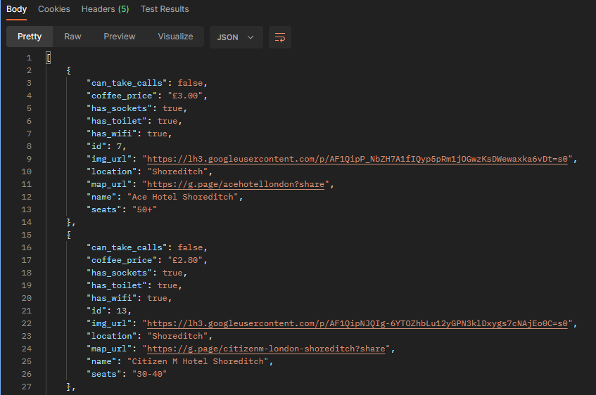

Coffee Shop API
The coffee shop API is a RESTful service that displays frontend information on coffee shops, and also offers this data from the API.

This API was built from two smaller projects - one which used an SQL database and one which stored data on a .csv file.
All aspects of the program that utilized a .csv file were re-written and adapted to the SQL database structure.
Postman was used to set up, test, and document the API. Arguments may be passed to retrieve specific data.
The coffee shop API was built as a project for this portfolio. The two smaller projects within it are designed and instructed by Dr. Angela Yu. You can view the code in its entirety here:
Coffee Shop API on Github